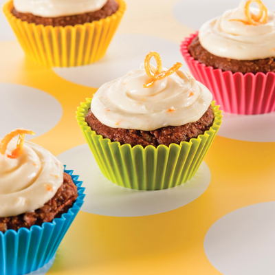
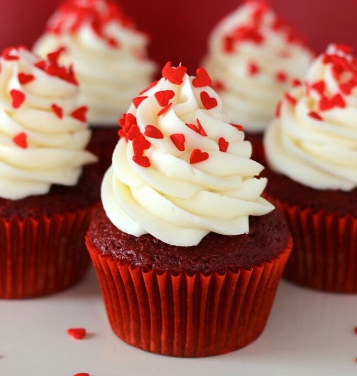

1 taza de azúcar
1 y 1/2 tazas de harina
1/2 cucharadita de bicarbonato de sodio
1/2 cucharadita de levadura en polvo
1/2 cucharadita de sal
1/2 taza de cacao amargo
1/2 taza de agua caliente
170 gr de manteca (mantequilla)
2 huevos grandes (a temperatura ambiente)
1/2 cucharada de ESENCIA DE VAINILLA
1/2 taza de yogur natural (la receta lleva crema que reemplacé como Sonia por yogur)
Para la cobertura (2 tazas):,
225 gr de chocolate negro de buena calidad
1 taza de crema espesa
Para decorar:
Rizos de chocolate negro
Precalentar el horno a 170° grados.En un bowl mezclar bien el cacao amargo con el agua caliente y reservar.En otro bol grande mezclar la harina, el bicarbonato, el polvo leudante y la sal. Tamizar y reservar. Fundir la manteca junto con el azúcar, removiendo. Una vez fundida pasamos la mezcla a un recipiente para seguir la preparación con batidora eléctrica hasta que enfríe. Una vez fría, añadir los huevos de a uno y la vainilla mientras se bate, la mezcla de chocolate y continuar hasta que todos los ingredientes estén bien incorporados. Reducir la velocidad y agregar la harina en dos tandas, alternando con la crema (o el yogur), sir batir demasiado para que no pierda aire. Rellenar los moldes de los cupcakes hasta 3/4 de su capacidad. Hornear aproximadamente 20 minutos. Comprobamos que estén cocidos pinchando con un palillo en el centro. Una vez fríos desmoldarlos y decorar con la cubierta de ganache, en este caso con dulce de leche. ganache de chocolate para la cobertura: Cortamos el chocolate en trozos. Reservar.Calentar la crema (nata) en una cacerolita sin que llegue a hervir. La volcamos sobre el chocolate y sin mezclarlo, esperamos a que el chocolate se derrita.Con cuidado y una vez que el chocolate se haya fundido, mezclamos hasta que resulte suave y brillante.Llevamos a la heladera y volvemos a mezclar suavemente cada 5 minutos hasta que el chocolate empiece a endurecerse un poquito y se aclare su color. Ya podemos cubrir los cupcakes.

Cupcake de Zanahoria
2 taza de harina
2 cucharaditas de canela molida
2 cucharaditas de bicarbonato de sodio
1 cucharadita de sal
2 tazas de azúcar morena
1/2 taza de aceite vegetal
3 cucharaditas de cáscara de naranja rallada
4 huevos grandes
2 tazas de zanahorias ralladas
3/4 taza de pasas doradas
4 onzas de queso crema ligero
1 cucharada de mantequilla, ablandada
1 1/2 tazas de azúcar en polvo, tamizada
Precalentar el horno a 350 ° F. Forrar 24 moldes para cupcakes.Combinar la harina de trigo integral, la harina para todo uso, la canela, el bicarbonato de sodio y la sal en un tazón mediano. Batir el azúcar morena, el aceite y 2 cucharaditas de cáscara de naranja rallada en un tazón grande hasta que se mezclen. Agregar la calabaza y los huevos; batir bien. Incorporar poco a poco la mezcla de harina. Incorporar las zanahorias y las pasas. Verter la masa en los moldes preparados, llenando a 2/3 de su capacidad. Hornear por 25 minutos o hasta que al insertar un palillo de madera en el cupcake, éste salga casi limpio. Enfriar en los moldes sobre rejillas de alambre durante 10 minutos; mover a rejillas de alambre para enfriar completamente. Batir el queso crema, la mantequilla, el azúcar en polvo y la cucharadita restante de cáscara de naranja rallada en un tazón pequeño hasta que quede suave. Untar sobre los cupcakes; decorar con cáscara de naranja confitada.

Cupcake Red Velvet
300 gr harina
350 gr leche entera
8 gr cacao en polvo
3 huevos
375 gr azúcar blanca
175 gr mantequilla
colorante rojos
esencia de vainilla
5 gr polvo hornear
20 gr vinagre de frutas
Para la cobertura
200 gr queso crema
100 gr azúcar impalpable
Agregar 5 gotas de colorante rojo a la leche, mezclar luego batir la mantequilla con el azúcar y los huevos durante 3 minutos. Agregar la leche, el vinagre y mezclar Agregar los ingredientes secos y mezclar. Colocar en moldes para cupcakes y hornear 170ºc durante 20 minutos o hasta que estén dorados. Para la cobertura batir el queso crema con el azúcar impalpable. Decorar los cupcakes red velvet y degustar.
 Al pie de la receta
Al pie de la receta